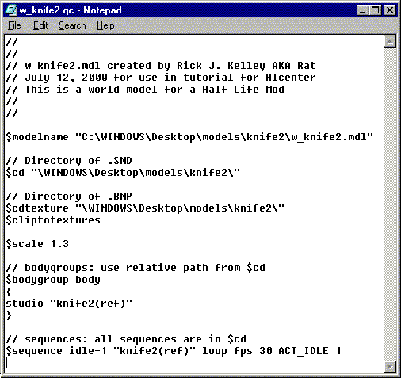

|
|
If you have made it this far, your are doing great! The final thing to get this model into a Half-Life, will be to create a QC file. Milkshape 3D has made the job easier for us. Select "Tools->Half-Life->Generate QC file..." and type in the "File name:" text box "w_knife2" for a file name. What will result in this will not be perfect, so we will have to open it for editing. Select "Tools->Half-Life->Edit QC file..." and select the "w_knife2.qc" file. You will see the text as shown in Figure 1.56 in "Notepad" window. You should alter it to like like the text in Figure 1.57.

Figure 1.56 Generated QC file

Figure 1.57 Corrected QC file
Some of the differences may not be obvious. One of the most important things to change is the $scale command to read: "$scale 1.3" as world models should appear larger as they will not be held close to the screen like the perspective view of the first persons models. You probably also want to correct the models name. You can call it whatever you like, but it is best to keep the naming convention the same as the rest of the Half-Life models. That is to say put a "w_" in front of the model name. It makes it easier for the coders to figure out what is going on, especially since usually you need 3 models to represent one weapon. You will need a "v_" and a "p_" and a "w_" model for each weapon that you design. Some thought should go into this. A lot of times modelers will strip down a "v_" model to make it into a "w_" model as you will not usually be looking at this model as closely as the "v_" model. The "v_" suffix implies that it will be a "view" model or seen up close in you hands as a player. The "p_" models are usually stripped down versions of the "v_" model as well as these are seen in the 3rd person models or what you see another player hanging onto in battle.
Well lets rap up this model and get it compiled! Select "Tools->Half-Life->Compile QC file..." to start the magic show! If all goes well, (you didn't have doubts did you?), you will have you world model called "w_knife2.mdl" in your directory. To view it you should use "Half-Life Model Viewer" to look at your handy work.
Hopefully this tutorial has been helpful to you in the creation of world model and I will get enough response to continue the series of tutorials. If all goes well we will be taking the model that we just made into a "p_" model next, then move on to a "v_" model, which will require animation. Then I hope to help you make a character model.
All material in this tutorial is copyrighted © 2000 by Rick J. Kelley and is not to be copied without the express permission of Rick J. Kelley. Half-Life® is Registered Trademark by Valve. Opposing Force® is a Registered Trademark of GearBox Software. Use of the pseudo name Rat is a referral to the author Rick J. Kelley.
|
|